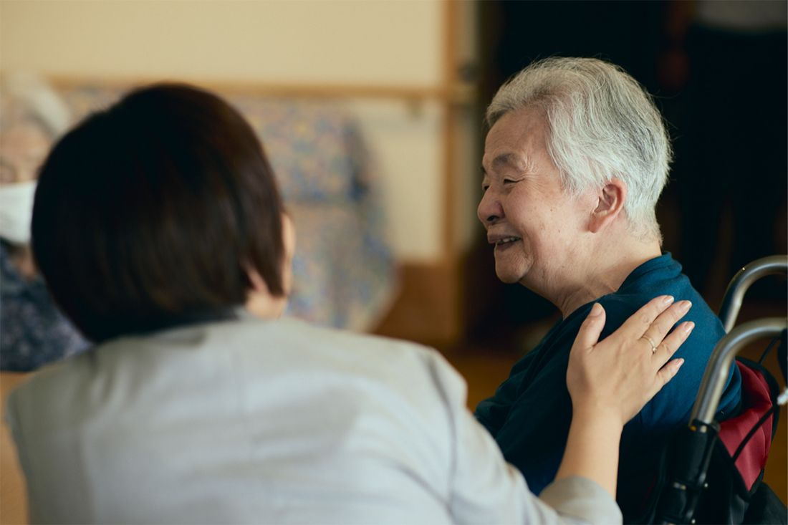

ABOUT実習について
学生のみなさんの職場体験・実習の案内です。保護者の方、学校の先生もご覧ください。
表の内容はダミーです。決まり次第、本物の内容に差し替えます。（実習は無償です）
| 目的 | 介護の現場を実際に体験し、仕事のイメージをつかむこと |
|---|
| 対象 | 学生のみなさん ダミー |
|---|
| 期間・時間 | 1DAYプログラム（9:30〜15:00ごろ）／5DAYSプログラム（5日間） 調整中 |
|---|
| 費用 | 無償（実習は無料で参加できます） |
|---|
| 体験できること | 施設の見学、利用者さんとの交流、食事や生活の見守りの補助 ダミー |
|---|
| 持ち物・服装 | 動きやすい服装、上履き、筆記用具 ダミー |
|---|
PROGRAM実習プログラム
1日だけ体験する「1DAYプログラム」と、5日間じっくり向き合う「5DAYSプログラム」があります。内容は調整中
1DAY実習プログラム（DAY1）
9:30〜 10:00
受付とオープニング
- メンターからの温かい出迎えで緊張をほぐす
- 【会社紹介】エフビー介護サービスについて（ショート動画で会社の雰囲気を共有）
10:00〜 12:00
現場シャドーイング＆伴走体験
- 介護現場のリアル体験
- （作業補助だけでなく、利用者様との「対話・人生のお話の傾聴」を中心とする）
12:00〜 13:00
ランチセッション（美味いご飯）
- 「美味しいご飯を食べて帰る」温かいコミュニケーション
- 先輩社員のリアルな地方暮らし・働き方の本音トーク
13:00〜 14:30
対話ワーク『100歳までの履歴書』
- 「過去の経歴」ではなく「どんな大人になっていたいか」から逆算する未来ワーク
- 自分が人生で大切にしたい「CARE（思いやり・根っこ）」の言語化
14:30〜 15:00
リフレクション＆フィードバック
- 担当メンターからの個別の応援メッセージ・フィードバックシートお渡し
- 軽井沢インターンシップや今後のイベント案内
- 実習の体験を後日実習サイトに掲載。
5DAYS実習プログラム（DAY5）
DAY1
インストール
- オリエンテーション、動画の鑑賞、メンターとの「実習中の目標」設定。
- 利用者様一人ひとりの「人生のお話」に耳を傾ける時間。
DAY2 - 3
現場ケアと人間関係の構築
- 現場業務のサポートおよび利用者様との対話（人生を重ねてきた大先輩方の「笑顔や生きがい」に触れる）。
- メンターとのデイリー振り返り（その日の気づきや感じたことの共有）。
DAY4
ご利用者様に笑顔を届け、生きがいを感じるプチ企画
- 学生が自分で考えた「利用者様を喜ばせる小さな企画（お茶会、手書きメッセージ、昔思い出トークなど）」の実践。
- 「自分の関わりで人が笑顔になる嬉しさ」を体感。
DAY5
100歳までの履歴書 発表会 ＆ 結びのランチ
- 午前：実習を通して見えた「自分自身が大切にしたい人生軸」と「100歳までの履歴書」のプチ発表。
- 午後：事業所長・メンター全員からのメッセージ ＋ 美味しいランチ・修了式。
- 実習生の感想・体験談を記録（Web掲載用の声としてストック）。
FOR PARENTS & TEACHERS保護者・学校の先生へ
安全への配慮や受け入れの流れは、内容が決まり次第こちらに掲載します（現在はダミーです）。ご不明な点は申込・問い合わせページの連絡先へどうぞ。